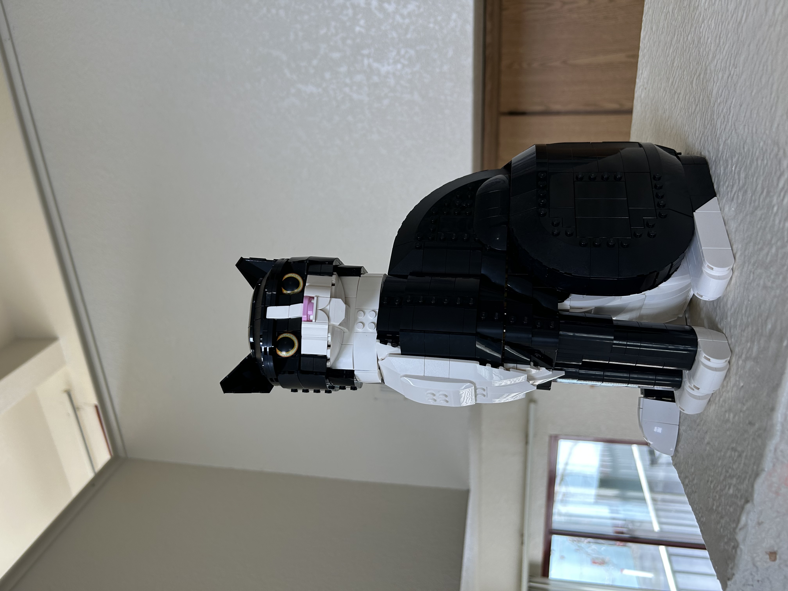
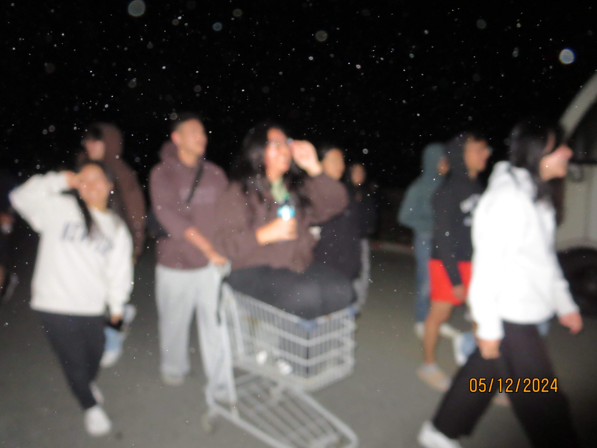

Visual Thinking Analysis

Part 1:

Part 2:

Part 1:

Part 2:
I love the whole concept of the "What's Going On in This Picture?" and how it pushes people to exercise their visual thinking abilities! The photos they chose were all super interesting, and reading the different interpretations people came up with were eye-opening because there were so many different possibilities that I didn't think of! It was also cool to hear how this activity was actively improving people's ability to find and present evidence for their reasoning. It was interesting how the VTS facilitation method asked very simple questions, but was able to receive such elaborate answers. I thought that the question of "What makes you think that?" was the most effective in getting people to voice their visual thinking strategies.
A website that I think has very interesting image presentation and interaction is Cartier's website/yearbook for 2024. In this website, when you hover over an image, the image would change to a text description, and the background of the entire website would change. I thought that was a super cool user interaction, and also changing the background gave users either a close-up of the original image or a whole new image or video that related to the original image, providing lots of visual interest. Clicking into the image brings you to another page with every more fun interactions and visual presentations, like different kinds of slideshows and image transitions, making everything very dynamic. The only drawback I can see is that the image changes and transitions might be a bit dizzying and disorienting for certain parts, but Cartier provides a lot of simple placement of images to balance out their more dynamic photo compositions.
View original article Cartier WebsiteFor this assignment, I chose to read the article from the Nielson Norman Group. The first thing I thought was super interesting was how applicable and relevant these practices were despite the article being written a decade ago and featuring very old web designs. Other than that, I learned lots about good overlay designs or practices, for example, darkening the main background when the overlay pops up, using descriptive titles, having clear action buttons and escapes from the overlay, etc. I also really found the five Ws: Who, What, When, Where, and Why, questions to ask before using an overlay to be very useful and helped clarified my understanding of when to use an overlay vs. creating a new page.
View original articleThis article was very interesting and taught me lots about how to make a good form design! I learned that the most important thing was to make the form as straightforward and easy to fill out as possible. I remember struggling to make onboarding pages for my projects in DES 112: Principles of UI/UX Design, despite having filled out so many onboarding processes myself. The reason for my struggles was primarily the different design patterns and cues that were mentioned in the article. For example, I distinctly remember thinking about the specific placement of my labels (inside the input or outside), as well as debating when to use dropdown menus versus radio buttons. I even struggled with the input box length for zip codes as well, creating different versions like one with a super long box the same length as every other input, or another one with a shorter box and the state input box directly next to it. This article and my experience in DES 112 made me realize how much I overlook very intentional design choices! While these patterns may seem obvious or small/miniscule, it really does emphasize the human-centered aspect of design. The difference between a long zip code box compared to a short one may not seem so important at a surface level, but users will feel the difference and it will affect their overall experience.
A website that I think has great form practices is the Etsy checkout page! They use radio buttons for choosing between payment options, making it easier to click through, and they save address and payment information from previous purchases (convenient, but not the most secure). In the case that you need to input new information like card details, they label every input and clearly mark it with asterisks to indicate required fields. They also include formatting examples like MM/YY so users can input things correctly on the first try.
View original article